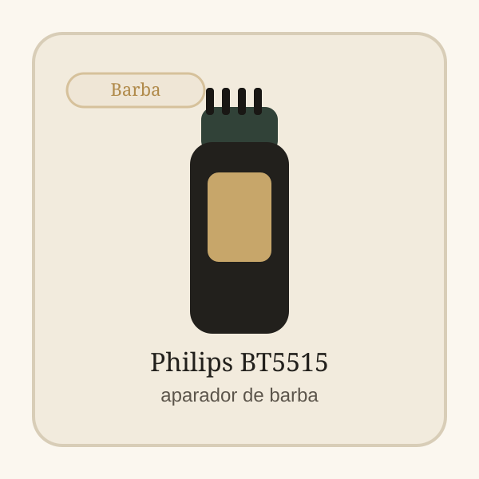

Categoria da loja
Para casa
Escolhas simples para manutenção regular sem transformar o grooming numa complicação. Os produtos principais aparecem logo abaixo e os guias ficam no fim para aprofundares só se precisares.
Braun Series 5 AIO5545
Aparador tudo-em-um para cabelo, barba e corpo numa só ferramenta.
Ver detalhes
Philips Beardtrimmer BT3238/15
Aparador de barba direto para linhas limpas e manutenção frequente.
Ver detalhesLigação à revista
Tens 3 guias ligados a esta categoria para tirares dúvidas antes de comprar.
Top Escolhas
Produtos que vale a pena abrir primeiro
Os produtos aparecem logo abaixo do título para chegares mais rápido à compra.



Como escolher
Como escolher nesta categoria
Começa pelo cenário mais parecido com o teu uso: melhor no geral, melhor para barba, melhor versatilidade. Depois compara duas ou três opções e escolhe a que encaixa melhor no teu uso real.
- Se queres resolver rápido, abre primeiro duas ou três opções fortes e só depois vais ao detalhe.
- Se vais usar com frequência, dá mais peso a conforto, consistência e manutenção do que ao número de extras.
- No fim da página tens artigos ligados a esta categoria para tirar dúvidas antes de clicar num produto.
Melhor para
Comparação rápida
Quatro atalhos para chegares ao tipo de produto certo.
Melhor no geralVer recomendação
Braun Series 5 AIO5545
Aparador tudo-em-um para cabelo, barba e corpo numa só ferramenta.
Melhor para barbaVer recomendação
Philips Beardtrimmer BT3238/15
Aparador de barba direto para linhas limpas e manutenção frequente.
Melhor versatilidadeVer recomendação
Hatteker Máquina Completa
Kit multiuso para quem quer resolver cabelo, barba e pequenos ajustes.
Revista
Artigos relacionados
Se ainda tens dúvidas, usa estes guias antes de abrir um produto específico.
Como escolher uma máquina de cortar cabelo para usar em casa
Guia direto para perceber potência, versatilidade e quando compensa investir mais numa máquina para casa.

Como montar uma rotina simples de barba em casa
Uma rotina simples de barba pede menos produtos do que parece e mais coerência entre os passos.
7 erros ao comprar uma máquina de cortar cabelo barata
O problema nem sempre é comprar barato. É comprar sem perceber onde o barato te vai limitar no uso real.
Perguntas frequentes
Preciso de várias ferramentas em casa?
Nem sempre. Em muitos casos, uma máquina versátil e uma rotina curta já resolvem bem.
Vale a pena tentar cortar cabelo em casa?
Vale quando queres manutenção regular e sabes onde queres simplificar.
Compra com confiança
Escolhe melhor antes de comprar
Recomendações curtas, comparação rápida e acesso direto para Amazon.es com links identificados.
Transparência: Alguns links nesta página são links de afiliado. O OndeCortar pode receber comissão por compras elegíveis.